Christmas dinner gets the planning, and the dessert table gets whatever is left of you at nine in the evening.
That is how a good spread turns into one tired cake and a bag of store cookies.
The fix is not more baking. It is picking two desserts that can be made days ahead, two that take ten minutes, and knowing which is which.
Here are 22 ideas sorted that way, with the timing and the things that go wrong.
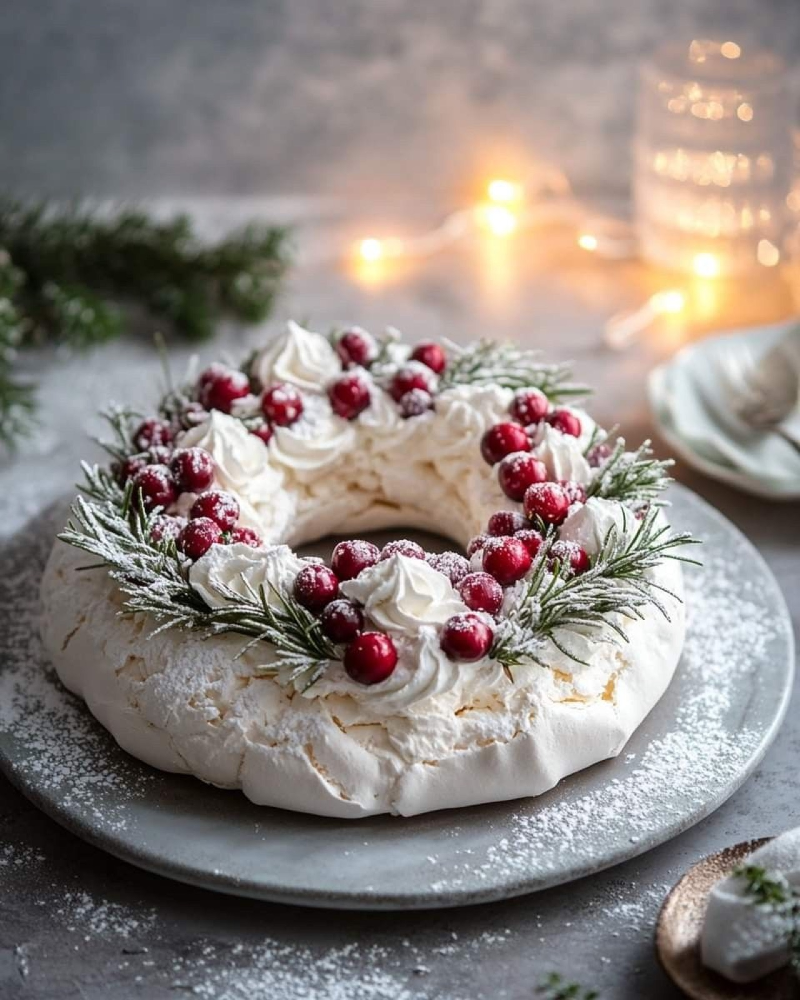
Five Rules for a Dessert Table That Still Works at Nine O'Clock
- One showstopper is enough. Everything else should be small, sliced, or on a stick.
- Cream and cheesecake go back in the fridge within two hours. Set a timer, because nobody remembers after the second glass of wine.
- Bake the bases early and decorate late. Meringue, brownies and cookie dough all keep. Whipped cream and fresh fruit do not.
- Label the allergens. A folded card that says nuts, dairy or gluten saves a guest from asking and you from guessing.
- Decorate with things people can eat. Sugared cranberries and chocolate shards beat plastic picks and ribbon every time.
Start with one showstopper
1. A Yule Log Earns Its Place as the Centerpiece
A bûche de Noël is the one dessert that can replace the flowers in the middle of the table.
The trick is the bark. On this one, shards of dark chocolate are pressed into the ganache standing up, and that rough edge reads as wood from across the room. Chopped hazelnuts and a sprig of holly finish it.
Make the chocolate shards by spreading melted chocolate thin on parchment, chilling it, and snapping. Press them in while the ganache is still tacky, and keep the whole log in the fridge until twenty minutes before serving.
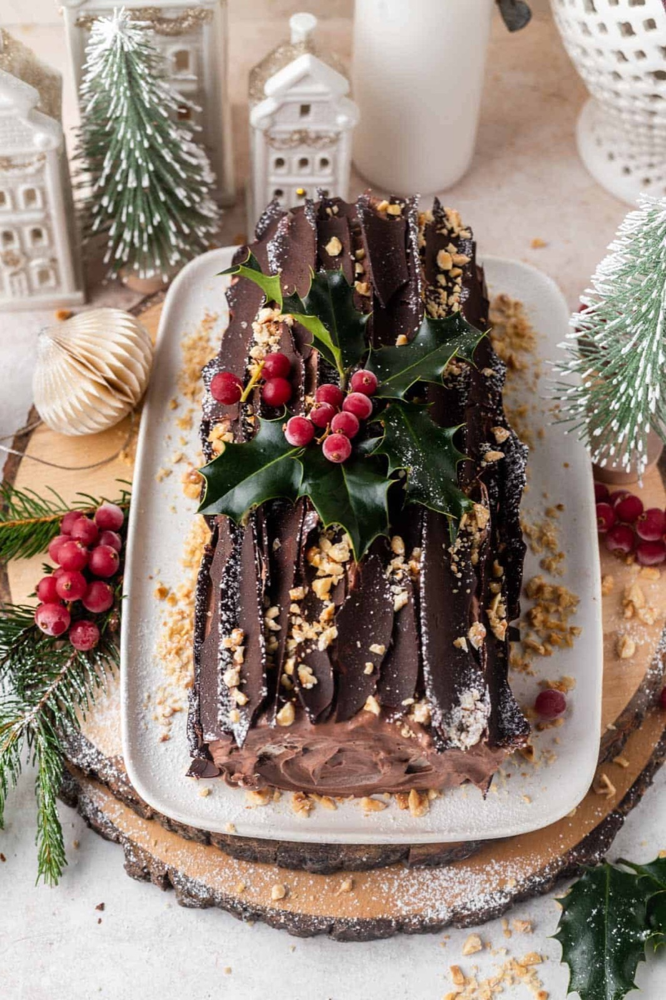
2. Stripes Only Work If the Layers Are Cold
A red velvet cheesecake looks like a lot of work. It is really two recipes stacked, and the stacking is the only hard part.
The layers here are cut clean enough to show three bands of red cake and two of cheesecake, which only happens when both are chilled solid before they meet.
Freeze the cheesecake layers for an hour before assembly and use a hot, dry knife for every slice. Rinse and wipe between cuts or the red smears into the white.
I skip frosting the sides on purpose. The stripes are the decoration.
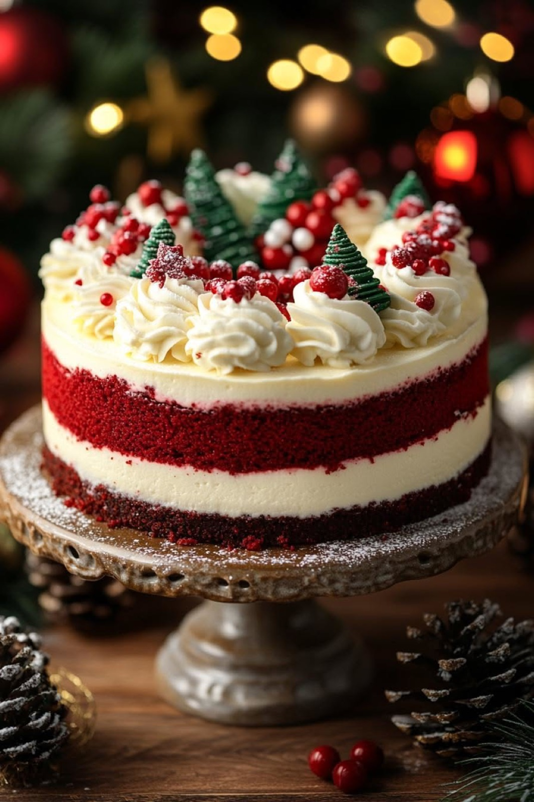
3. Bake the Meringue Early. Fill It Late.
Why do so many pavlovas weep? Moisture. It is the easiest showstopper on this list and the easiest to ruin, for the same reason.
This one is piped in a ring, which gives you a wreath shape for free, and dressed with whipped cream, sugared cranberries and rosemary standing in for pine.
Bake it the night before and leave it in the oven, door shut, heat off, until morning. Add cream and fruit within the hour you serve it, not before.
If the kitchen is steamy from dinner, keep the shell in a cold oven until the last minute.

4. A Sheet-Pan Dessert Feeds Twenty Without a Cake Stand
When the guest count climbs, stop making round things.
This tiramisu is built in a baking tin, dusted with cocoa, and finished with a tree drawn in chocolate shavings and a few sugar pearls. One corner is already cut, and it still looks intentional.
Lay a paper tree template on the cocoa, shave chocolate inside it with a vegetable peeler, and lift the paper straight up.
Tiramisu holds raw egg or mascarpone cream, so it lives in the fridge and comes out in batches. Two hours out is the limit.
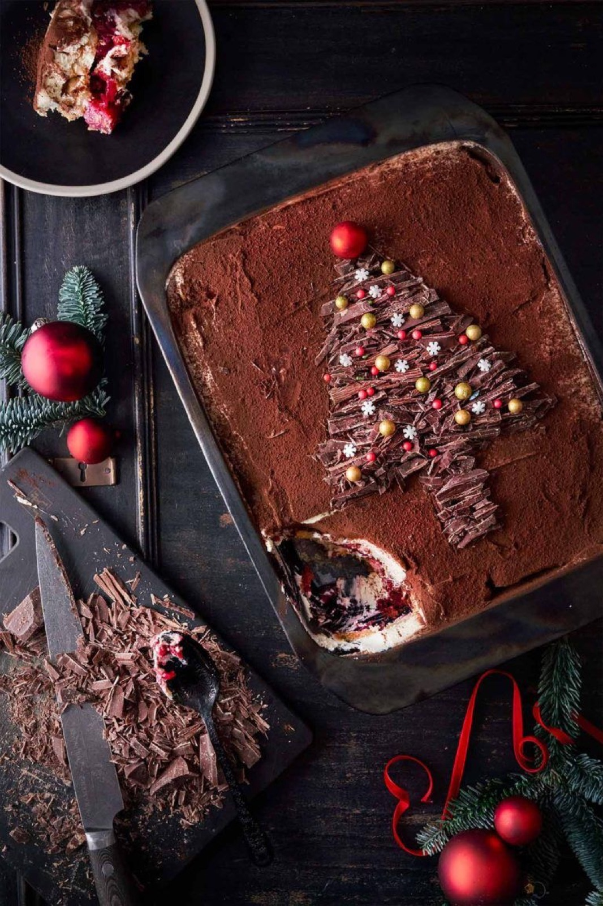
5. Nobody Eats the Gingerbread House. Plan for That.
A gingerbread house is a decoration that happens to be made of cookie. Treat it like one.
This house sits on its own board with a drift of coconut snow and a ring of iced gingerbread snowflakes around the base. The snowflakes are the part people actually eat.
Glue the walls with royal icing made from egg white powder, not the soft icing you spread on cookies, and give the walls a full hour before the roof goes on.
Build it on a board you can carry, so it moves from the counter to the coffee table in one trip.
Cheesecakes and trifles that travel
6. Sugared Cranberries Need a Night to Dry
Frosted cranberries are the cheapest way to make a plain cheesecake look like a magazine cover, and most people rush them.
On this slice, they sit in a heap on a thick layer of cream, over a cranberry swirl and a graham cracker crust.
Soak the berries in warm simple syrup for ten minutes, drain, and leave them on a rack for an hour. Then roll in sugar and leave them another hour, or overnight. Rolled wet, the sugar melts into a pink glaze within the hour.
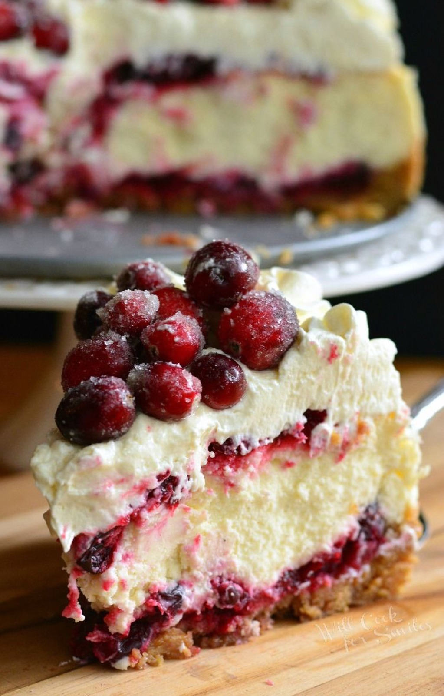
9-Inch Leakproof Springform Pan
Shop on Amazon124-Piece Piping Bags and Tips Set
Shop on Amazon7. Press the Berries to the Glass
The mistake with a trifle is putting the fruit in the middle, where nobody can see it. Only the outside layer matters.
This one shows a clean band of strawberries, raspberries and blueberries between the cheesecake cream, with graham crumbs above and below. That band is there because someone pushed the fruit against the glass as they went.
Build it in a straight-sided bowl. The curved kind hides the bottom third.
Assemble the morning of and keep it cold. Berries bleed into cream after a day.
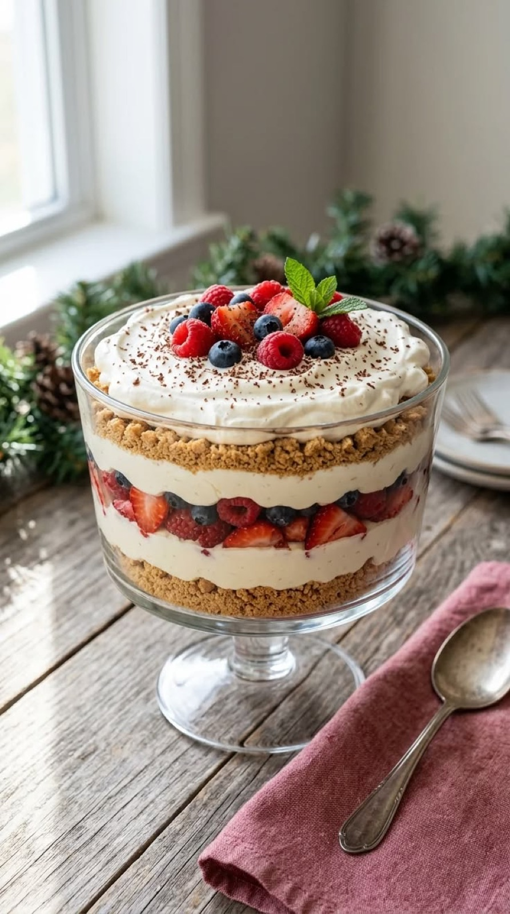
124-Piece Piping Bags and Tips Set
Shop on Amazon8. Make Twelve Small Ones Instead of One Big One
Individual desserts solve the two problems a big cheesecake has: cutting it, and finding a flat spot to put the slice down.
These gingerbread cheesecake cups are set in clear plastic tumblers over a gingersnap crust, with a small iced gingerbread man standing in the cream.
They are no-bake, which means four hours in the fridge minimum, and they are easier to carry to someone else's house than anything with a crust.
Put the cookie in just before serving. It goes soft in the cream within an hour.
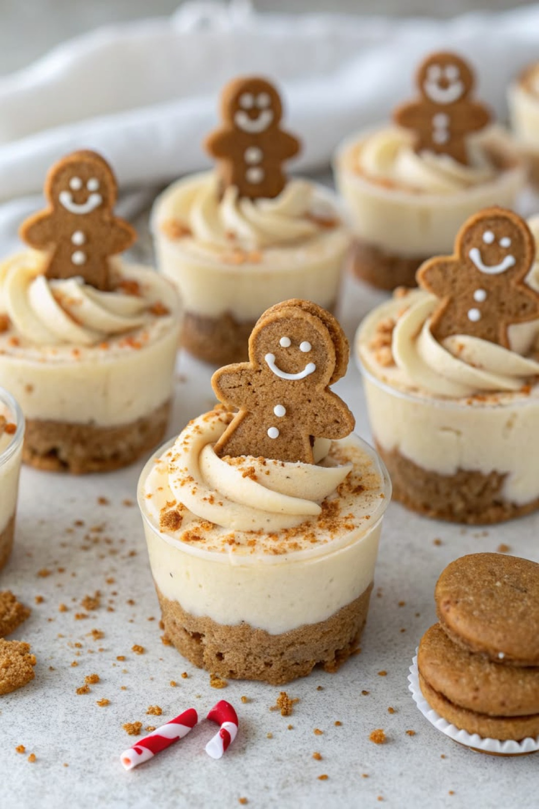
124-Piece Piping Bags and Tips Set
Shop on Amazon9. Short Glasses, Not Tall Ones
A strawberry Santa hat on top of a parfait is a great idea until it falls off.
This cup is built in a short, wide tumbler, which is why the strawberry stays balanced on the mound of cream. The same thing in a tall champagne flute tips.
Hull the strawberry flat and set it point-up with a dot of cream for the pom. Then stop. Anything else on top makes it top-heavy.
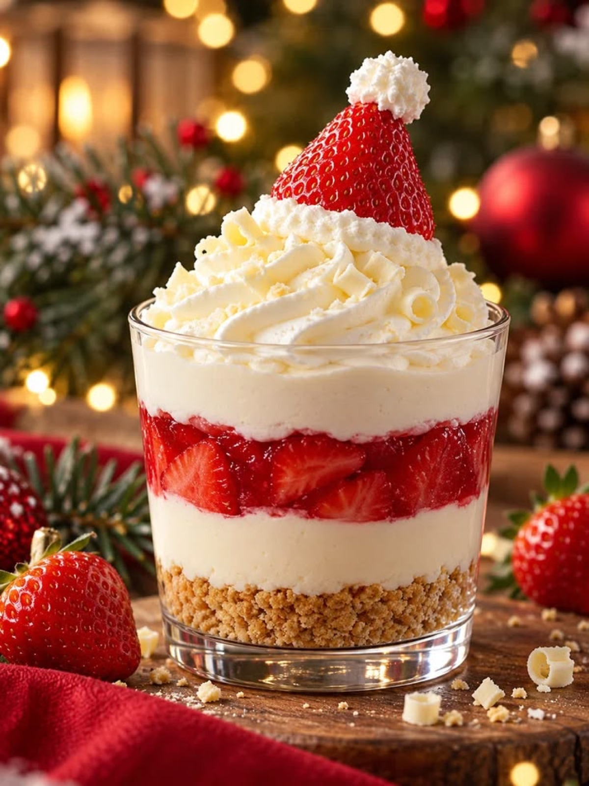
5 oz Mini Dessert Cups with Lids, Set of 50
Shop on Amazon124-Piece Piping Bags and Tips Set
Shop on Amazon10. Freeze Before You Glaze
Mirror glaze is not hard. It is just impatient with warm cake.
These mousse cakes have a brownie base, a chocolate mousse set in a ring mold, and a dark glaze poured on while the mousse was frozen solid. A white chocolate snowflake, red currants and one silver dragée finish each one.
Freeze the mousse for at least four hours, pour the glaze at around 90°F, and let it drip through a rack. Then leave them alone in the fridge for an hour to thaw.
Count on one snowflake per cake. Two looks like a mistake.
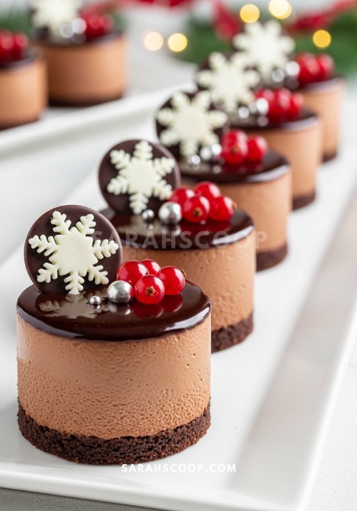
Cookies and bark for the tin
11. A Cookie Box Is a Gift You Did Not Have to Wrap
Iced sugar cookies are twice the work of plain ones. A kraft box turns that work into a present.
This box holds nine: a Santa, two trees, a gingerbread man, an ornament, a candy cane, a star and two snowflakes, each flooded in royal icing with gold and pearl sprinkles on top.
Flood the base colour one day and pipe the detail the next. Lines bleed into wet icing.
Pack the cookies tight so nothing slides, and add a strip of paper between layers. Chipped icing is the only way a box like this goes wrong.
12. Two Coats of Sugar, Not One
Count the coats of sugar on a crinkle cookie. If there is only one, it bakes grey.
These red velvet ones show deep red cracks through a thick white coat, and one is broken open to show the soft middle.
Roll the dough balls in granulated sugar first, then in powdered. The first coat stops the second from dissolving into the dough as it bakes.
Chill the dough for an hour before rolling. Warm dough spreads flat and the cracks disappear.
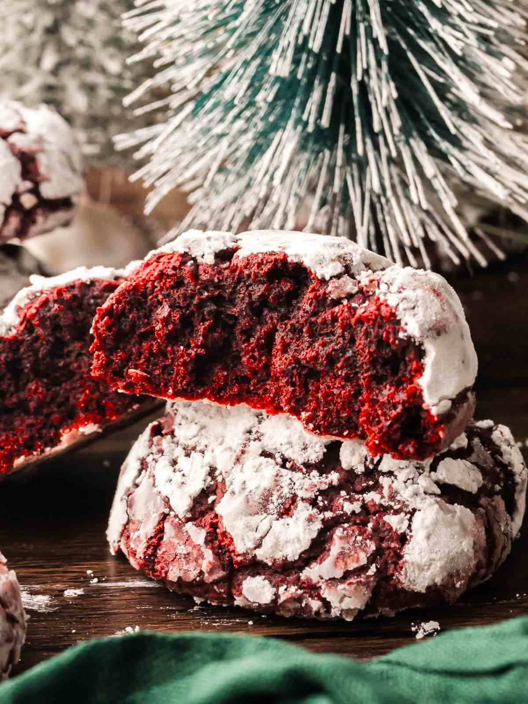
Stainless Steel Sugar Shaker Duster, 2-Pack
Shop on Amazon13. Let the Dark Layer Set, But Not Harden
Peppermint bark is two ingredients and one timing problem.
The pieces here show a dark layer, a white layer and crushed candy canes on top, and they hold together when stacked because the white was poured at the right moment.
Spread the dark chocolate, chill it ten minutes until it is matte but still soft, then pour the white. Fully hard dark chocolate separates from the white when you cut.
Crush the candy canes in a bag with a rolling pin, not a food processor. You want pieces, not dust.
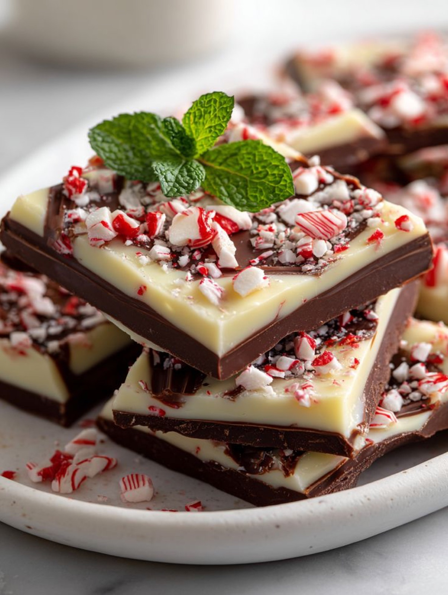

14. Dip Half Dark and Half White
Chocolate-covered pretzels are the dessert for the night you have nothing left.
This bowl is half dark chocolate and half white, every one covered in red, green and white nonpareils, and that split is what makes a bowl of pretzels look like a plan.
Melt the chocolate with a teaspoon of coconut oil per cup so it sets with a snap, dip, shake off the extra, and sprinkle before it sets.
They keep a week in a tin. Mark the ones with nuts if you use peanut butter chips.
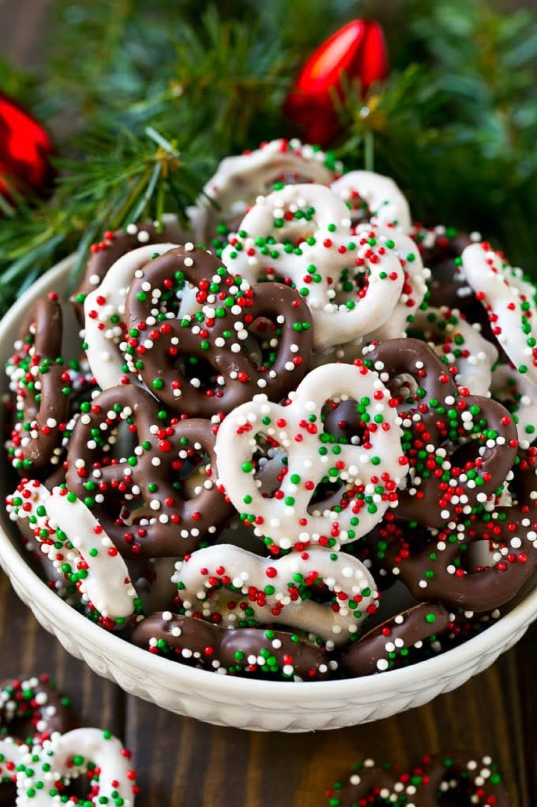
49-Piece Candy Melting and Dipping Kit
Shop on Amazon15. Chill the Truffles Hard Before You Stack
Truffles stacked in a pyramid take a quarter of the space of truffles laid out flat, and they look like more.
This tower mixes dark and white truffles rolled in red, green and white sugar, with others drizzled in contrasting chocolate, all sitting on a wood board with holly and sugared cranberries at the base.
Freeze the finished truffles for thirty minutes first. Soft ones squash under the row above.
Start with a ring of the biggest ones and work in. Odd numbers per row stack cleaner than even.
Red, Green & White Holiday Sprinkles Mix, 1 lb
Shop on AmazonThe ones the kids can finish
16. A Strawberry, a Swirl, and a Dot
Santa hat brownies are the best assembly-line dessert I know. One person pipes, one person sets strawberries, and a six-year-old can do the dots.
Each brownie square here wears a whole strawberry in a ring of whipped cream with a cream pom on the tip, and the strawberry stands straight because it was hulled flat.
Pipe the cream no more than an hour ahead. The brim slumps and the strawberries weep after that.
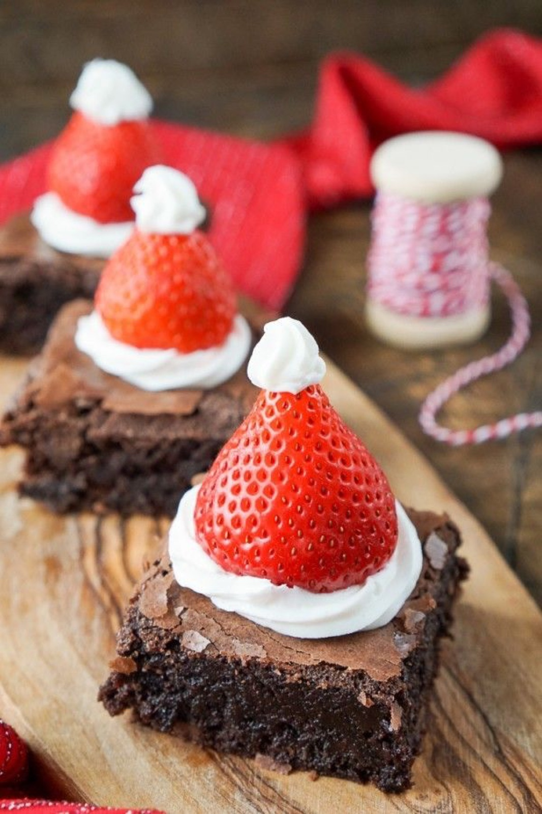
124-Piece Piping Bags and Tips Set
Shop on Amazon17. Antlers Go In at an Angle
Every December I lose two antlers before the first photo. The rest of a reindeer cupcake is three candies and a swirl of frosting.
These have a swirl of pale pink buttercream, a round caramel chocolate for the face, a red candy nose, two black sugar dots for eyes, and chocolate antlers pushed in leaning back.
Pipe the antlers from melted chocolate onto parchment, chill them, and push them into the frosting at an angle so they look like antlers and not a fork.
Make a few spares. Half of them break on the way to the cupcake.
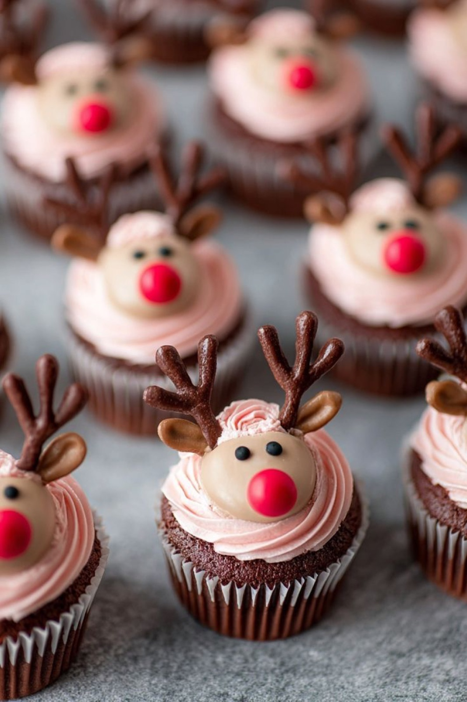
18. Hide the Foam Under the Stand
Cake pops standing up look like a crowd. Cake pops lying down look like leftovers.
These snowmen are two stacked balls each, dipped white with black dot eyes and buttons and an orange candy nose, standing on a gold-rimmed cake stand with three more on a plate below.
Push the sticks into a block of floral foam and set the stand's plate over it, or wrap the foam in foil and cover it with a napkin.
Space them unevenly. A grid looks like a shop.
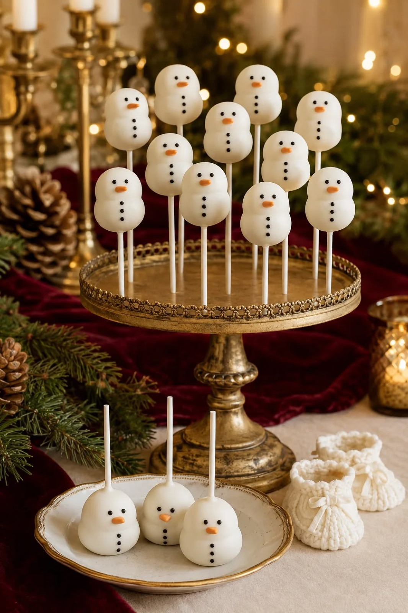
3-Tier Cupcake and Dessert Stand
Shop on Amazon19. Push the Marshmallow In at the End
Twenty minutes, then five. That is the whole recipe for a hot chocolate brownie, a muffin-tin brownie with a marshmallow baked into the middle.
These are cooling on a rack with thin lines of melted chocolate piped over the top and red, green and white nonpareils on the marshmallow.
Bake the brownies for twenty minutes, press a marshmallow into the center of each, and give them five more. Any earlier and the marshmallow vanishes into the batter.
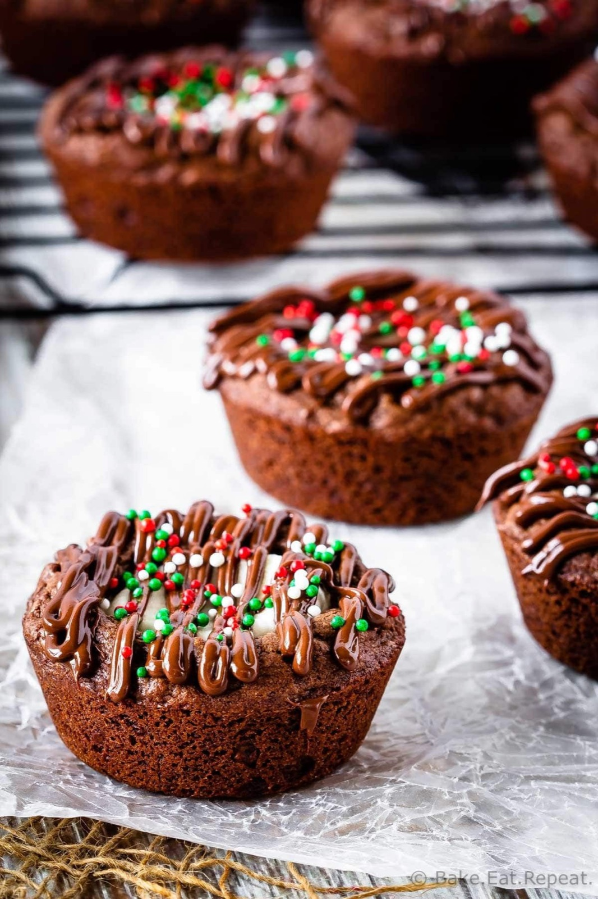
12-Cup Nonstick Muffin and Cupcake Pan
Shop on AmazonRed, Green & White Holiday Sprinkles Mix, 1 lb
Shop on AmazonWarm desserts and pastries
20. Serve It Hot or Not at All
Sticky toffee pudding is the one dessert here that should never meet the dessert table. It goes from the oven to the bowl.
This serving is a square of dark date sponge under a pour of caramel sauce, with whipped cream on the side, and the sauce has soaked in because both were hot when they met.
Bake the sponge a day ahead, keep the sauce in a jar, and reheat both together for ten minutes at 325°F before serving. Pour the sauce over while it is still bubbling.
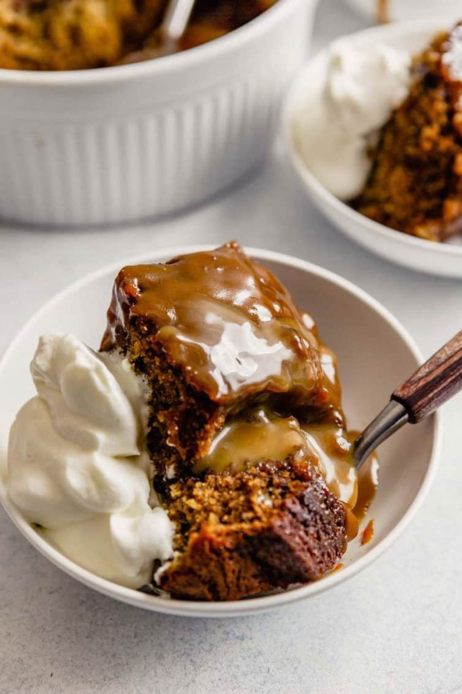
Icing Squeeze Writing Bottles, Set of 7
Shop on Amazon21. Two Full Twists Per Branch
Most credit for the least work. That is a puff pastry tree, and the whole thing hinges on the twisting.
This one is two sheets of pastry with Nutella between them, cut into a tree, with each branch twisted and baked golden. Small pastry stars from the trimmings sit on top under a dusting of sugar.
Twist every branch two full turns. One turn unwinds in the oven and you get a flat tree.
Brush with egg wash and bake at 400°F for 20 minutes on parchment, then slide it onto a board to serve. It is best within an hour.
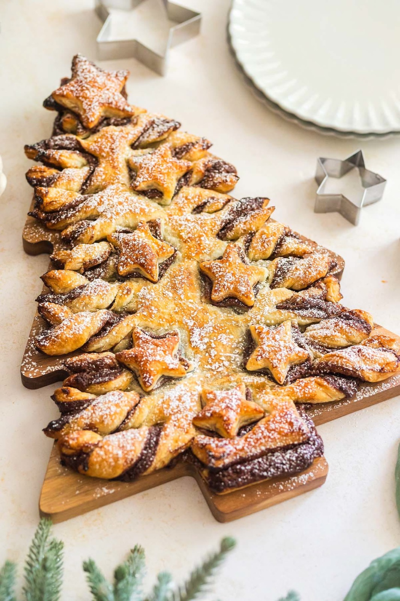
18-Piece Christmas Cookie Cutter Set
Shop on AmazonStainless Steel Sugar Shaker Duster, 2-Pack
Shop on Amazon22. One Big Roll on the Bottom
Three cinnamon rolls stacked up are a tree. Three cinnamon rolls the same size stacked up are a pile.
This stack uses one large roll on the bottom and two smaller ones above, glazed white and scattered with red and green nonpareils, with one sprinkle on the top for a star.
Bake the rolls, let them cool for ten minutes, then stack and glaze while they are warm so the glaze runs down and holds the layers.
Serve the same morning. Stacked rolls dry out faster than rolls in a pan.
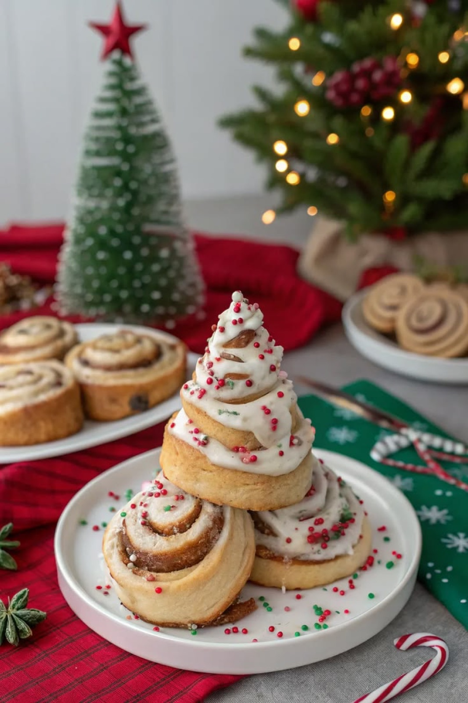
Icing Squeeze Writing Bottles, Set of 7
Shop on AmazonCommon Mistakes (and Fixes)
- Whipped cream piped at noon for a seven o'clock party. Pipe within the hour, or use stabilised cream with a spoonful of mascarpone folded in.
- A cheesecake left out all evening. Two hours at room temperature is the limit for anything with dairy or egg. Put out half and keep half cold.
- Every dessert is chocolate. Add one fruit dessert and one plain cookie. Not everyone wants chocolate after a heavy dinner.
- Nothing is labelled. Three folded cards, nuts, dairy, gluten, take a minute and save a guest from asking in front of everyone.
- Decorating with things nobody can eat. Fresh rosemary, sugared cranberries and chocolate shards do the same job as plastic picks, and they disappear with the dessert.
Where to Start
You do not need all twenty-two of these.
Pick one showstopper, two things that keep for a week in a tin, and one tray the kids can decorate on the day.
That is four desserts, three of them done before anyone arrives, and a table that still looks full at the end of the night.
The rest of this list will keep until next year.